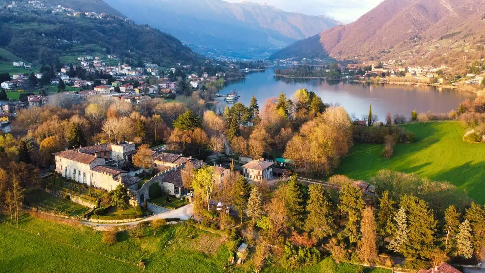
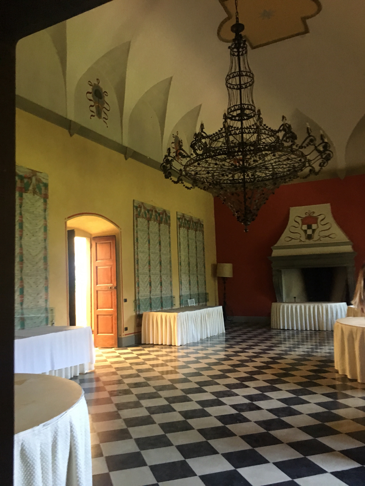
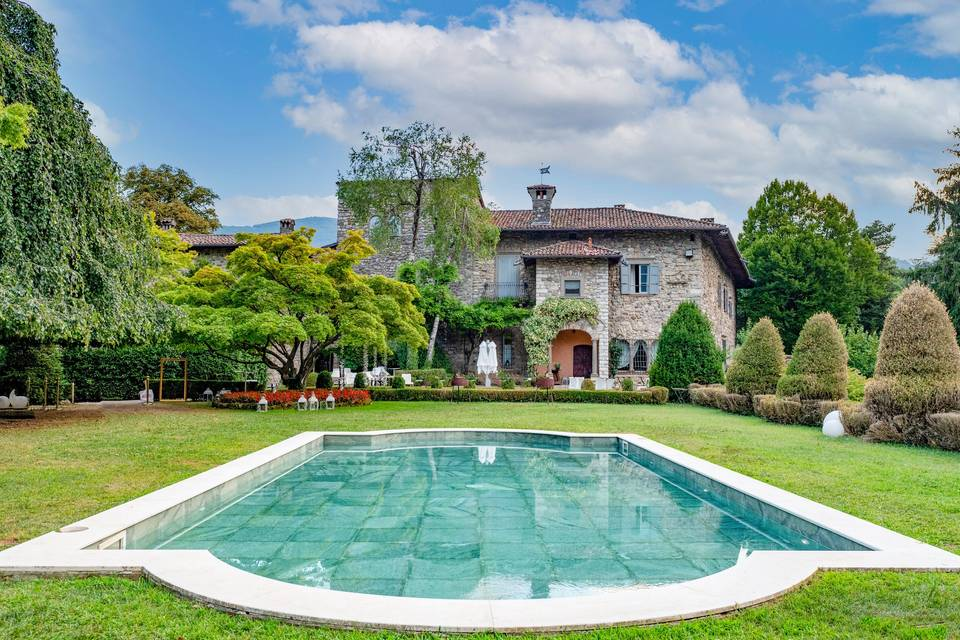
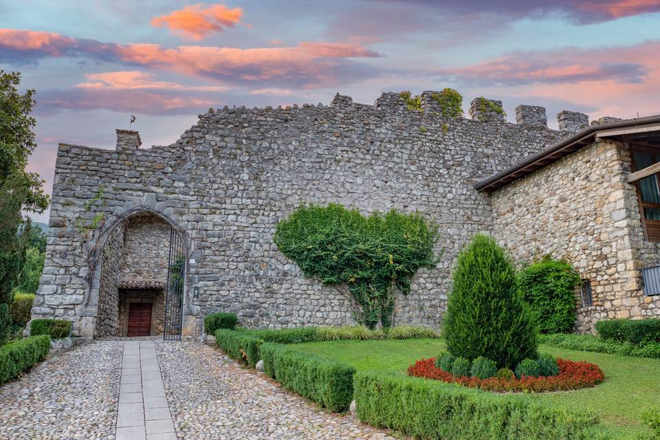

Un'esperienza guidata esclusiva per scoprire il fascino secolare del Castello di Monasterolo e la meraviglia del suo giardino fiorito affacciato sulle acque del Lago di Endine.
Una visita guidata suggestiva per scoprire i segreti della storia medievale del borgo e ammirare il giardino del Castello avvolto nei caldi colori e scenari dell'autunno.
La prenotazione è obbligatoria per garantire un tour guidato fluido ed esclusivo.
Prenota via WhatsApp (388 9762514)Un percorso immersivo tra arte, natura e racconti d'altri tempi
Esplora l'imponente struttura fortificata, la torre storica, la piazzetta e le storiche sale interne arricchite da soffitti in legno, affreschi e decorazioni d'epoca.
Passeggia nel parco verde del Castello, scoprendo l'area con la suggestiva piscina incastonata all'interno della recinzione ma immersa nel primo pezzo di giardino.
Godi della vista dall'alto sul Castello di Monasterolo e sul meraviglioso specchio d'acqua del Lago di Endine circondato dalle colline autunnali.
Le guide e i volontari della Proloco ti accompagneranno passo dopo passo per garantirti un'esperienza culturale ricca ed accessibile.
Una piccola anteprima della bellezza che ti aspetta a Monasterolo del Castello




Tutto quello che c'è da sapere prima di venire in visita
Sì, la prenotazione è obbligatoria per permetterci di organizzare i gruppi di visita al meglio. Puoi prenotare inviando un messaggio WhatsApp al numero 388 9762514.
Sono disponibili comodi parcheggi adibiti ai visitatori del castello, nelle immediate vicinanze. Inoltre il castello è velocemente raggiungibile a piedi dal lungo lago, essendo anche a meno di 10 minuti dal parco Biali.
Si consiglia di arrivare con 15 minuti di anticipo (ore 10:15) direttamente davanti all'ingresso del Castello in Piazzetta Contessa V. Terni de Gregori, 1.